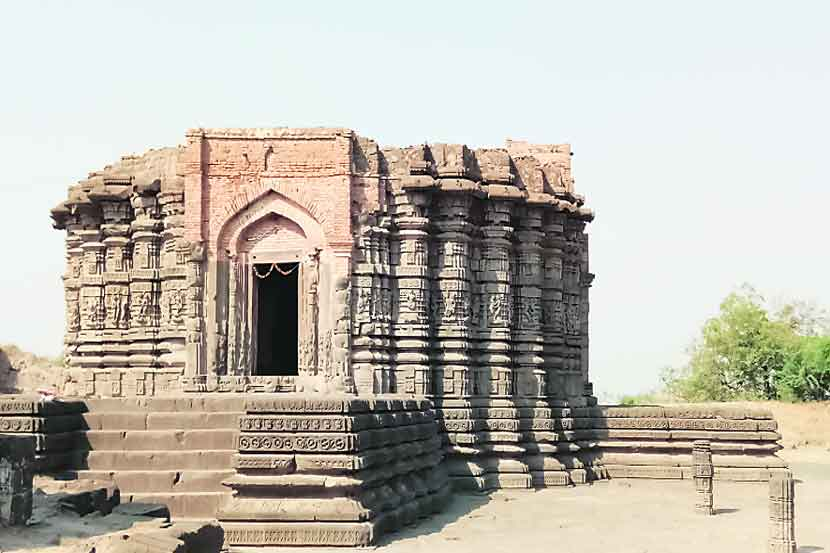
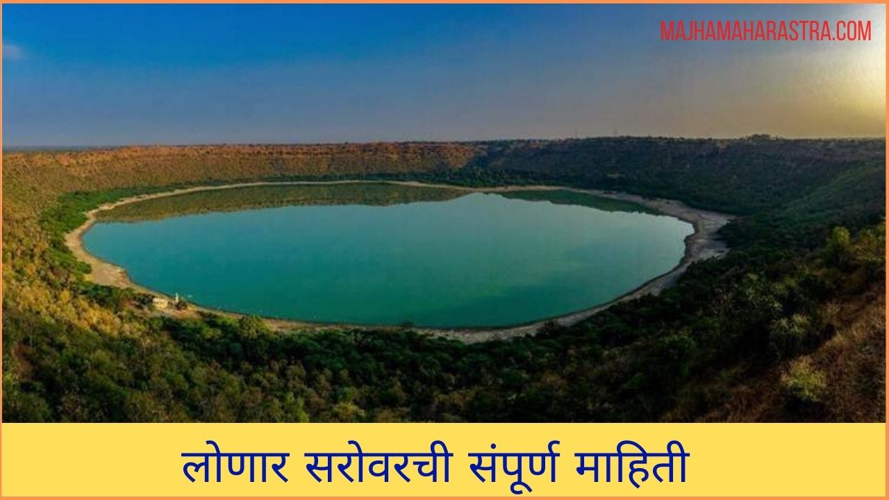

जगप्रसिद्ध लोणार सरोवर बद्दल माहिती

जगप्रसिद्ध उल्काविवरासोबतच लोणारमध्ये एक अपरिचित , प्राचीन पण तितकीच सुंदर वास्तू उभी आहे. दैत्यसुदन मंदिर . लाखो वर्षापूर्वी अशनी कोसळून तयार झालेल्या विश्वविख्यात सरोवरा भोवतालच्या परिसरात अनेक प्राचीन मंदिरे पाहायला मिळतात. दैत्यसुदन मंदिर हे त्यातलं सर्वात उत्कृष्ट आणि विलक्षण सुंदर आहे . विदर्भातल्या कडकडीत उन्हाळ्यात इतक्या लांबचा प्रवास करून इथे यायचं म्हणजे एक साहसच . पण मंदिर पाहिल्यावर मिळणाऱ्या समाधानात इथे येण्याचं सार्थक होतं.चालुक्य सत्तेच्या काळात राजा विक्रमदित्याने ११ व्या शतकादरम्यान बांधलेले हे मंदिर अनेक शतके मातीच्या ढिगाऱ्याखाली गडप झाले होते . नंतर १८७८ मध्ये उजेडात आले .

लोणारचे सरोवर महाराष्ट्र राज्यामधील बुलढाणा जिल्ह्यातले खाऱ्या पाण्याचे तिसरा सरोवर आहे. याची निर्मिती एका उल्कापातामुळे झाली. हे सरोवर औरंगाबाद शहरापासून १५० कि.मी. अंतरावर आहे. लोणार हे बेसॉल्ट खडकातील एकमेव मोठे आघाती विवर आहे. याचे पाणी अल्कधर्मी आहे. लोणार सरोवराच्या जतनासाठी व संवर्धनासाठी लोणार विवर हे वन्यजीव अभयारण्य म्हणून घोषित केले आहे.तसेच या परिसरात अंदाजे बाराशे वर्षांपूर्वीची मंदिरे आहेत. त्यातील १५ मंदिरे विवरातच आहेत.आणखीन मंदिरे आहे.
Presented by Mr.Abhijit Ashok Nichang